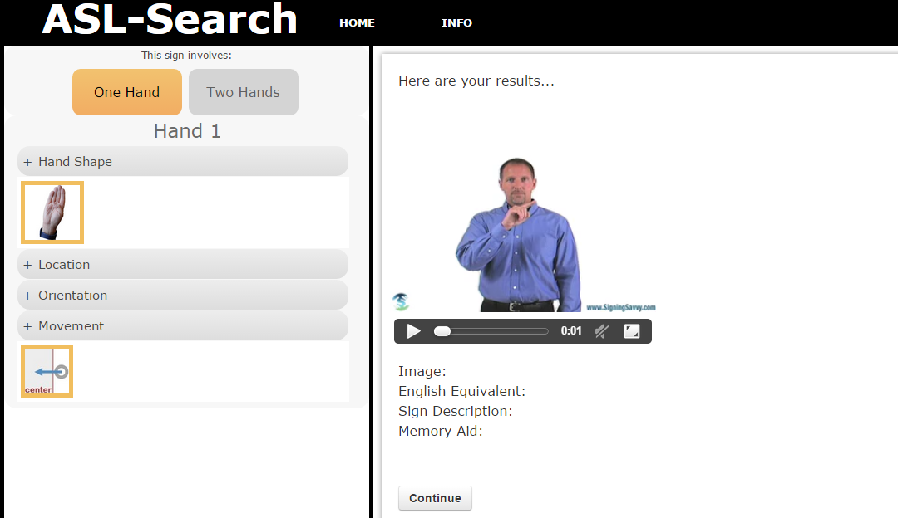

Tisha Trongtham
Home
Work
Projects
About
Work
Duties
Skills
Projects
Jobs
Student Linux Systems Administrator
- Health Sciences Library
Undergraduate Student Researcher
- Mobile Accessibility Lab

Undergraduate Student Researcher
- Human Robot Interaction Lab